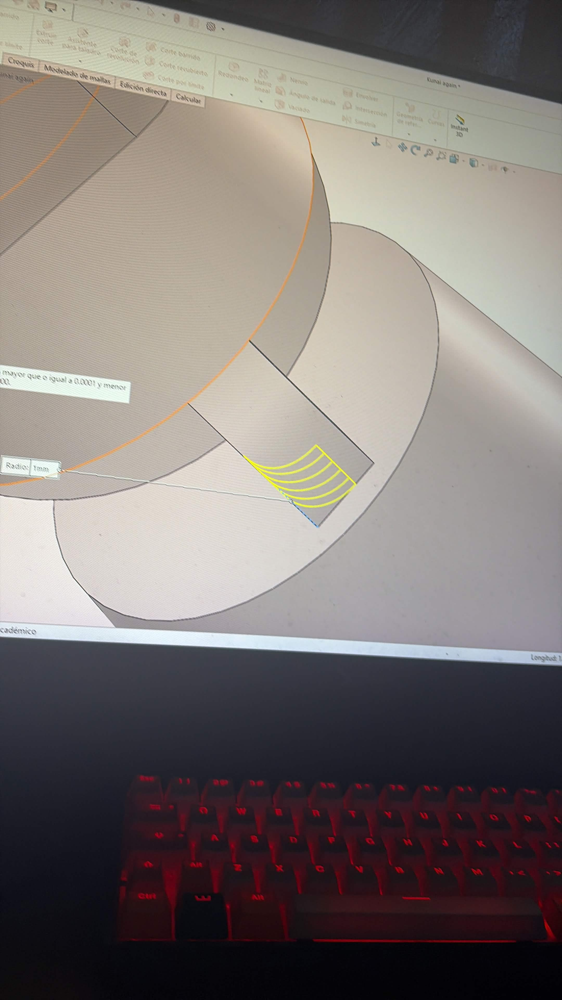
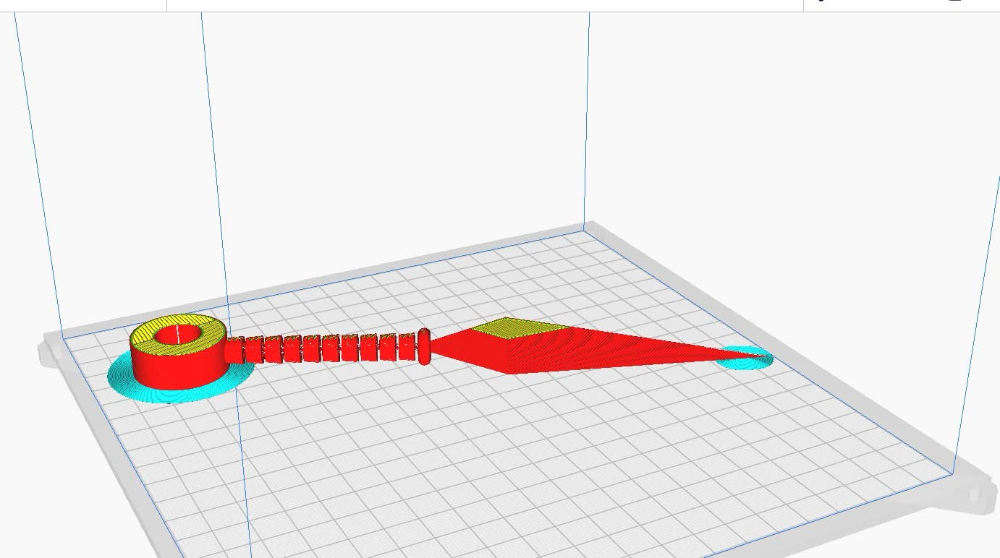
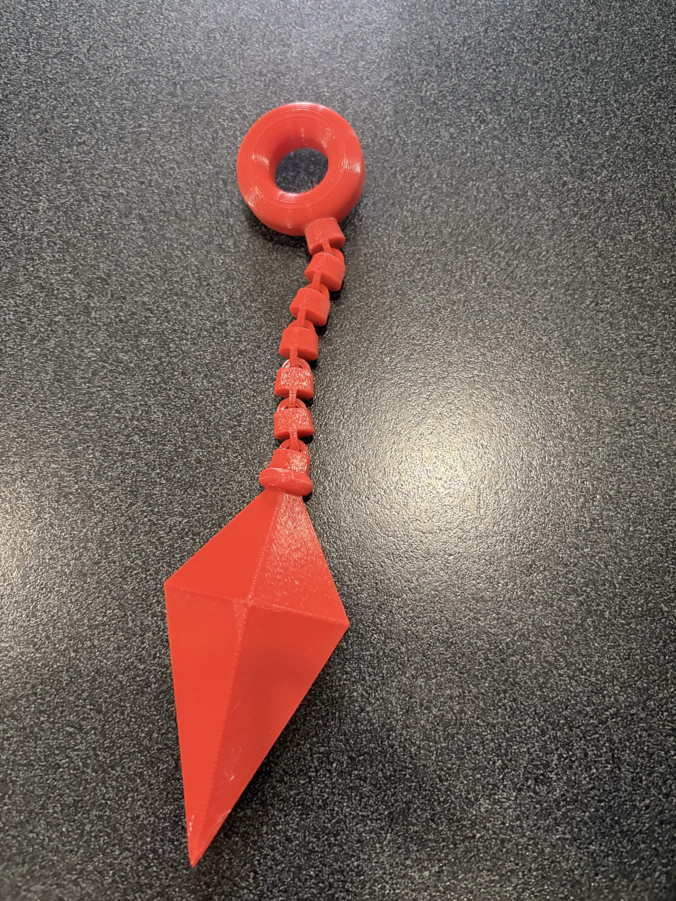

1. Introducción y Contexto
La transformación de geometrías virtuales tridimensionales en elementos físicos tangibles y móviles mediante tecnologías de manufactura aditiva requiere el dominio de los flujos de trabajo de impresión 3D. Durante esta quinta semana de actividades, el propósito principal consistió en la correcta exportación de archivos CAD a formato STL, la configuración y segmentación de mallas en el software de laminación (UltiMaker Cura), la operación de la impresora 3D Prusa M4 y la validación de ensamblajes mecánicos con movimiento integrado [1] [2].
Comprender las tolerancias geométricas, la orientación de las piezas en la plataforma y los parámetros térmicos y mecánicos es fundamental para asegurar el correcto funcionamiento cinemático de los mecanismos impresos [1] [2].
2. Preparación y Exportación del Archivo STL (SolidWorks)
Para transferir de manera óptima las piezas tridimensionales desde el entorno CAD hacia el laminador, se llevaron a cabo los siguientes pasos:
2.1 Exportación a Formato STL
¿Cómo funciona? A partir de un modelo sólido en SolidWorks, se selecciona Archivo > Guardar como, eligiendo el formato .stl. En las opciones de configuración avanzada (Options...), se define una salida en formato Binario y una resolución personalizada con tolerancias adecuadas para optimizar la malla poligonal sin perder definición geométrica.

3. Laminado de Piezas y Generación de G-code (UltiMaker Cura)
El archivo STL se procesó en el software de laminación para adaptarlo a las especificaciones de la impresora Prusa M4:
3.1 Configuración de Parámetros de Impresión
¿Cómo funciona? Se configura el perfil de la impresora y se selecciona el material adecuado (como PLA con su respectivo diámetro de filamento). Se definen las propiedades de la pieza tales como la escala, la rotación óptima en la plataforma y la densidad de relleno estructural (Infill entre 20% y 40% con patrones como Cúbico o Giroide) para garantizar la resistencia mecánica en las uniones móviles.
3.2 Simulación y Guardado de G-code
¿Cómo funciona? Tras oponer el comando de rebanado (Slice), se revisa el tiempo estimado de impresión y el consumo de filamento. Mediante la vista previa (Preview), se analiza el tipo de línea y las trayectorias de la boquilla antes de exportar el código G resultante a una tarjeta de almacenamiento SD.
4. Operación de la Impresora Prusa M4 y Resultados
La fabricación física de los elementos se ejecutó siguiendo rigurosos protocolos operativos en el equipo de manufactura aditiva:
4.1 Proceso de Impresión 3D
¿Cómo funciona? Se inserta la tarjeta SD con el archivo G-code en la impresora Prusa M4, verificando la limpieza previa de la cama caliente. Se corroboran las temperaturas de operación de la boquilla (aprox. 190°C - 220°C para PLA) y de la base, iniciando el proceso mediante la interfaz táctil y supervisando detalladamente la adherencia de las primeras capas.

4.2 Resultados Finales

5. Mecanismo en Movimiento
Como requisito fundamental de esta práctica, el diseño impreso integra un sistema cinemático capaz de generar movimiento mecánico funcional tras el ensamblaje de sus componentes:
5.1 Demostración en Video del Mecanismo
¿Cómo funciona? A continuación se muestra la prueba de funcionamiento del mecanismo impreso, evidenciando la libertad de movimiento, la precisión de las tolerancias de separación y la correcta operación de las piezas ensambladas:
6. Conclusiones
La práctica demuestra que una correcta exportación en formato STL, combinada con una adecuada configuración en el laminador, el control de tolerancias para piezas móviles y la supervisión de los parámetros en la impresora Prusa M4, resulta indispensable para conseguir mecanismos tridimensionales funcionales, con óptimo acabado superficial y precisión cinemática [1] [2].
7. Fuentes de Información
Los parámetros de fabricación y normas operativas se basan en la documentación técnica del laboratorio y la literatura especializada:
- [2] Manual de Operación IDIT. (2026). Guía de uso para Impresora 3D Prusa M4, UltiMaker Cura, parámetros de temperatura y normativas de seguridad.
- [1] Planchard, D. C. (2020). Engineering Graphics with SOLIDWORKS. SDC Publications.